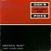
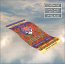
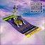
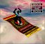
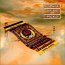
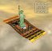
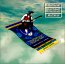
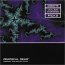

- DICK'S PICKS, VOL. ONE (1993)

"Tampa, Florida 12-19-73"
Grateful Dead Records: GDCD4018
Produced and recorded by Kidd Candelario
- Jerry Garcia--Lead guitar, vocals
- Keith Godchaux--Keyboards
- Donna Jean Godchaux--Giving birth
- Bill Kreutzmann--Percussion
- Phil Lesh--Bass, vocals
- Bob Weir--Guitar, vocals
"Tape archivist Dick Latvala"
Tracks:
- DICK'S PICKS, VOL. TWO (March, 1995)
Dick's Picks, Vol. 2, in association with Amazon.com
"Columbus, Ohio 10/31/71"
Grateful Dead Records: GDCD4019
- Jerry Garcia--Lead guitar, vocals
- Keith Godchaux--Keyboards
- Bill Kreutzmann--Percussion
- Phil Lesh--Bass, vocals
- Bob Weir--Guitar, vocals
Recorded by Rex Jackson; Tape archivist: Dick Latvala
Tracks:
- "Dark Star/Jam": Garcia, Hart,
Kreutzmann, Lesh, McKernan, Weir, Hunter
- "Sugar Magnolia": m: Weir; w: Hunter
- "St. Stephen": m: Garcia & Lesh;
w: Hunter
- "Not Fade Away": Charles Hardin and Norman Petty
- "Going Down the Road Feeling
Bad": trad.; arr. Grateful Dead
- "Not Fade Away"
- DICK'S PICKS, VOL. THREE (November, 1995)
Pembroke Pines, FL 5/22/77
GDCD 4021
Grateful Dead
Merchandising's entry (with sound files)
Recorded by Betty Cantor-Jackson
Design by Gecko Graphics
- Jerry Garcia: lead Guitar, vocals
- Donna Jean Godchaux: vocals
- Keith Godchaux: keyboards
- Mickey Hart: drums
- Bill Kreutzmann: drums
- Phil Lesh: bass
- Bob Weir: guitar, vocals
- DICK'S PICKS, VOL. 4 (February, 1996)
February 13-14, 1970, at the Fillmore East.
Grateful Dead Records: GDCD 4023
- Jerry Garcia: Lead guitar, vocals
- Mickey Hart: Drums
- Bill Kreutzmann: Drums
- Phil Lesh: Electric bass, vocals
- Ron "Pig Pen" McKernan: Organ, percussion, vocals
- Bob Weir: Guitar, vocals
Recorded by Owsley Stanley
Liner notes by Owsley Stanley
Tracks:
- DICK'S PICKS, VOL. 5: May, 1996
GDCD 4024
The GD Web site essays on the album, including writing by Gary Lambert and Steve
Silberman
12/26/79: Oakland Auditorium (Henry J. Kaiser)
Grateful Dead:
- Jerry Garcia: Lead guitar, vocals
- Mickey Hart: Drums
- Bill Breutzmann: Drums
- Phil Lesh: Electric bass
- Brent Mydland: Keyboards, vocals
- Bob Weir: Guitar, vocals
Recorded by Betty Cantor-Jackson
Photo by Jay Blakesberg; Design by Gecko Graphics
Tracks:
- DICK'S PICKS, VOLUME 6: (October, 1996)
Grateful Dead Merchanidising
Recorded at: Civic Center, Hartford, CT -- October 14, 1983
Grateful Dead Records: 4026
- DICK'S PICKS, VOL. 7: (March 1997)

Selections from Alexandra Palace, London, September 9-11, 1974
Grateful Dead Merchandising
Grateful Dead Records
- DICK'S PICKS, VOL. 8:

Grateful Dead Merchandising
Grateful Dead Records: GDCD 4028
Recorded at: Harpur College, Binghamton, NY---5/2/70
Disc #1
- "Don't Ease Me In": trad., arr. GD
- "I Know You Rider": trad., arr. GD
- "Friend of the Devil": Garcia/Hunter
- "Dire Wolf": Garcia/Hunter
- "Beat it on Down the Line": Fuller
- "Black Peter": Garcia/Hunter
- "Candyman": Garcia/Hunter
- "Cumberland Blues": Garcia/Hunter
- "Deep Elem Blues": trad., arr. GD
- "Cold Jordan": trad., arr. GD
- "Uncle John's Band": Garcia/Hunter
Disc #2
- "St. Stephen": Garcia/Lesh/Hunter
- "Cryptical Envelopment": Garcia
- Drums
- "The Other One": Weir
- "Cryptical Envelopment": Garcia
- "Cosmic Charlie": Garcia/Hunter
- "Casey Jones": Garcia/Hunter
- "Good Lovin'"
Disc #3
- "It's a Man's World"
- "Dancing in the Streets
- "Morning Dew"
- "Viola Lee Blues"
- "We Bid You Goodnight"
- DICK'S PICKS, VOL. 9 (Oct. 18, 1997)

GDCD4029 $18.50
Madison Square Garden, New York City, NY: 9/16/90
Grateful Dead Merchandising's entry
- DICK'S PICKS, VOLUME TEN: (Feb. 1998)

"Winterland Arena 12/29 & 30/77"
Grateful Dead Merchandising entry
THE BAND:
- Jerry Garcia - Lead Guitar, Vocals
- Mickey Hart - Drums
- Donna Jean Godchaux - Vocals
- Keith Godchaux - Keyboards
- Bill Kreutzmann - Drums
- Phil Lesh - Electric Bass, Vocals
- Bob Weir - Rhythm Guitar, Vocals
Recorded by: Betty Cantor-Jackson
Tape Archivist: Dick Latvala
CD Mastering: Jeffrey Norman
Ferromagnetist: John Cutler
Design by: Gecko Graphics
- CD ONE:
- "Jack Straw": (7:06) Weir, Hunter
- "They Love Each Other": (7:45) Garcia, Hunter
- "Mama Tried": (3:49) Merle Haggard
- "Loser": (8:30) Garcia, Hunter
- "Looks Like Rain": (8:39) Weir, Barlow
- "Tennessee Jed": (9:09) Garcia, Hunter
- "New Minglewood Blues": (6:05) Traditional Arr. by Bob Weir
- "Sugaree": (14:19) Garcia, Hunter
- "Promised Land": (4:35) Chuck Berry
- CD TWO:
- "Bertha": (7:21) Weir, Barlow
- "Good Lovin'": (6:51) Resnick, Clark
- "Playing In the Band" (15:48) Weir, Hart, Hunter
- "China Cat Sunflower": (5:39) Garcia, Hunter
- "I Know You Rider": (5:27) Traditional Arr. by Grateful Dead
- "China Doll": (7:24) Garcia, Hunter
- "Playing Jam": (1:40) Weir, Hart
- "Drums" (2:39) Kreutzmann, Hart
- "Not Fade Away": (10:05) Hardin Petty
- "Playing In the Band": (4:48) Weir, Hart, Hunter
- CD THREE:
- Terrapin Station": (10:29) Garcia, Hunter
- "Johnny B. Goode": (4:34) Chuck Berry
12/30/77
- "Estimated Prophet": (10:47) Weir, Barlow
- "Eyes of the World": (15:25) Garcia, Hunter
- "St. Stephen": (9:18) Garcia, Lesh, Hunter
- "Sugar Magnolia": (9:53) Weir, Hunter
- DICK'S PICKS, VOLUME 11: June, 1998

GDCD4031
"Stanley Theatre, Jersey City, NJ 9/27/72"
The Grateful Dead
- Jerry Garcia: Lead Guitar, Vocals
- Donna Jean Godchaux: Vocals
- Keith Godchaux: Keyboards
- Bill Kreutzmann: Drums
- Phil Lesh: Electric Bass, Vocals
- Bob Weir: Rhythm Guitar, Vocals
Recorded By: Owsley Stanley, Bob Matthews
Tape Achivist: Dick Latvala
CD Mastering: Jeffery Norman
Ferromagnetist: John Cutler
Design: Gecko Graphics
Photography: Jonas Grushkin
Stanley Photography: Tina Eaton
- DICK'S PICKS, VOLUME 12

GDCD4032
"Providence Civic Center and Boston Garden: 6/26/74 and 6/28/74 "
THE BAND:
JERRY GARCIA
DONNA JEAN GODCHAUX
KEITH GODCHAUX
BILL KREUTZMANN
PHIL LESH
BOB WEIR
Recorded By: Bill Candelario
Tape Archivist: Dick Latvala
CD Mastering: Jeffery Norman
Ferromagnetist: John Cutler
Album Design: Gecko Graphics
Photography: Jim Anderson, Mary Ann Mayer and Bruce Polonsky
- CD ONE
- Jam (2:29)
- China Cat Sunflower
- Mind Left Body Jam
- I Know You Rider
- Beer Barrel Polka
- Truckin'
- Other One Jam
- Spanish Jam
- Wharf Rat
- Sugar Magnolia
- CD TWO
- Eyes of the World
- Seastones
- Sugar Magnolia
- Scarlet Begonias
- Big River
- To Lay Me Down
- Me & My Uncle
- Row Jimmy
- CD THREE
- Weather Report Suite
- Prelude
- Part1
- Part 2 Let it Grow
- Jam
- U.S. Blues
- Promised Land
- Goin' Down the Road Feeling Bad
- Sunshine Daydream
- Ship of Fools
- DICK'S PICKS, VOLUME 13

Grateful Dead Merchandising entry
GDCD4033
[complete track listing to follow]
- DICK'S PICKS, VOLUME 14
Grateful Dead Merchandising entry
GDCD4034
[complete track listing to follow]
- DICK'S PICKS, VOLUME 15
Grateful Dead Merchandising entry
GDCD4035
"Englishtown, New Jersey: September 3, 1977"
GRATEFUL DEAD:
- Jerry Garcia
- Donna Godchaux
- Keith Godchaux
- Mickey Hart
- Bill Kreutzmann
- Phil Lesh
- Bob Weir
- Recorded by Betty Cantor-Jackson
- Tape Archivist: Dick Latvala
- CD Mastering by Jeffrey Norman
- Ferromagnetist: John Cutler
- Design by Gecko Graphics
- Photography by Jim Anderson, John Oliver, GD Archives
- DICK'S PICKS, VOL. 16
- DICK'S PICKS, VOL. 17
- DICK'S PICKS, VOL. 18
Dane County Coliseum, Madison, WI, 2/3/78 & Uni Dome, Univeristy of Northern Iowa, Cedar Falls, IA, 2/5/78
- DICK'S PICKS, VOL. 19
- DICK'S PICKS, VOL. 20
- DICK'S PICKS, VOL. 21
- DICK'S PICKS, VOL. 22
- DICK'S PICKS, VOL. 23
- DICK'S PICKS, VOL. 24
- DICK'S PICKS, VOL. 25
- DICK'S PICKS, VOL. 26
4046 CD
ELECTRIC THEATER CHICAGO, IL 4/26/69
LABOUR TEMPLE MINNEAPOLIS, MN 4/27/69
GRATEFUL DEAD
Tom Constanten Keyboards
Jerry Garcia Lead guitar, vocals
Mickey Hart Drums
Bill Kreutzmann Drums
Phil Lesh Electric bass, vocals
Ron PigPen McKernan Percussion, Harmonica, Vocals
Bob Weir Rhythm guitar, vocals
Recorded by Owsley Stanley
CD Mastering Jeffrey Norman
Tape Archivists David Lemieux
Archival Research Eileen Law/Grateful Dead Archives
Design and Layout Robert Minkin / www.minkindesign.com
Special thanks to Becky and Gary Halonen
- CD ONE
- Dupree’s Diamond Blues Garcia, Hunter
- Mountains Of The Moon Garcia, Hunter
- China Cat Sunflower Garcia, Hunter
- Doin' That Rag Garcia, Hunter
- Cryptical Envelopment Garcia
- The Other One Weir, Kreutzmann
- The Eleven Lesh, Hunter
- The Other One Weir, Kreutzmann
- I Know It's A Sin J & M Reed*
- Turn On Your Lovelight Malone, Scott**
- Me and My Uncle Phillips***
- Sitting On Top Of The World Carter, Jacobs
- CD TWO
- Dark Star Garcia, Hart, Kreutzmann, Lesh, McKernan, Weir, Hunter
- St. Stephen Garcia, Lesh, Hunter
- The Eleven Lesh, Hunter
- Turn On Your Lovelight Malone, Scott**
- Morning Dew Dobson, Rose*****
- DICK'S PICKS, VOL. 27
4047 CD
"OAKLAND COLISEUM ARENA - OAKLAND, CA - 12/16/92"
GRATEFUL DEAD
Jerry Garcia Lead guitar, vocals
Mickey Hart Drums
Bill Kreutzmann Drums
Phil Lesh Electric bass, vocals
Bob Weir Rhythm guitar, vocals
Vince Welnick Keyboard, vocals
Recorded by Dan Healy
CD Mastering Jeffrey Norman
Tape Archivists David Lemieux
Archival Research Eileen Law/Grateful Dead Archives
Design and Layout Robert Minkin / www.minkindesign.com
Photography Ken Friedman ©2003
- CD ONE
- Feel Like A Stranger (Weir, Barlow)
- Brown-Eyed Woman (Garcia, Hunter)
- The Same Thing (Dixon)
- Loose Lucy (Garcia, Hunter)
- Stuck Inside Of Mobile With The Memphis Blues Again (Dylan)
- Row Jimmy (Garcia, Hunter)
- Let It Grow (Weir, Barlow)
- CD TWO
- Shakedown Street (Garcia, Hunter)
- Samson and Delilah (Trad. Arr. By Bob Weir)
- Ship Of Fools (Garcia, Hunter)
- Playing In The Band (Weir, Hart, Hunter)
- Drums (Hart, Kreutzmann)
- Space (Garcia, Lesh, Weir)
- CD THREE
- Dark Star (Garcia, Hart, Kreutzmann, Lesh, McKernan, Weir, Hunter)
- All Along The Watchtower (Dylan)
- Stella Blue (Garcia, Hunter)
- Good Lovin’ (Clark, Resnick)
- Casey Jones (Garcia, Hunter)
12/17/92
- Throwing Stones (Weir, Barlow)
- Not Fade Away (Petty, Hardin)
- Baba O’Riley (Townshend)
- Tomorrow Never Knows (Lennon, McCartney)
- DICK'S PICKS, VOL. 28 release date: April 9, 2003
Pershing Muni Auditorium, Lincoln NE ~ Feb 26, 1973
Salt Palace, Salt Lake City, UT ~ Feb 28, 1973
GRATEFUL DEAD
Jerry Garcia
Donna Jean Godchaux
Keith Godchaux
Bill Kreutzmann
Phil Lesh
Bob Weir
PigPen (In Spirit)
Recorded by Bill Candelario
CD Mastering Jeffrey Norman
Tape Archivist David Lemieux
Archival Research Eileen Law/Grateful Dead Archives
Cover Art & Package Design Robert Minkin / www.minkindesign.com
Pershing Municipal Auditorium • Lincoln, NE• February 26, 1973
- CD ONE
- Promised Land 3:36 Berry
- Loser 6:58 Hunter / Garcia
- Jack Straw 5:17 Weir/Hunter
- Don't Ease Me In 4:01 Trad. Arr. by Grateful Dead
- Look Like Rain 7:24 Weir/Barlow
- Loose Lucy 7:04 Hunter / Garcia
- Beer Barrel Polka 1:07 Zeman, Vejvoda, Timm, Brown
- Big Railroad Blues 4:00 Lewis, Arr. by Grateful Dead
- Playing In The Band 17:23 Weir / Hart / Hunter
- They Love Each Other 5:51 Hunter / Garcia
- Big River 4:36 Cash
- Tennessee Jed 8:03 Hunter / Garcia
- CD TWO
- Greatest Story Ever Told 5:26 Weir / Hart / Hunter
- Dark Star 25:23 Garcia/Hart / Kreutzmann / Lesh / McKernan / Weir / Hunter
- Eyes Of The World 19:09 Hunter / Garcia
- Mississippi Half Step ..... 8:00 Hunter / Garcia
- Me and My Uncle 3:26 Phillips
- Not Fade Away 6:34 Petty / Hardin
- Goin' Down The Road Feeling Bad 7:52 Trad. Arr. by Grateful Dead
- Not Fade Away 3:02 Petty / Hardin
Salt Palace • Salt Lake City, UT • February 28, 1973
- CD THREE
- Cold Rain and Snow 6:30 Grateful Dead
- Beat It On Down The Line 3:23 Fuller
- They Love Each Other 5:54 Hunter / Garcia
- Mexicali Blues 4:03 Weir / Barlow
- Sugaree 8:03 Hunter / Garcia
- Box of Rain 5:18 Lesh / Hunter
- El Paso 4:42 Robbins
- He's Gone 12:06 Hunter / Garcia
- Jack Straw 4:48 Weir / Hunter
- China Cat Sunflower 7:20 Hunter / Garcia
- I Know You Rider 5:46 Trad. Arr. by Grateful Dead
- Big River 4:26 Cash
- CD FOUR
- Row Jimmy 8:27 Garcia/Hunter
- Truckin' 12:02 Garcia / Lesh / Weir / Hunter
- The Other One 15:07 Weir / Kreutzmann
- Eyes Of The World 17:02 Hunter / Garcia
- Morning Dew 12:40 Dobson / Rose
- Sugar Magnolia 9:11 Weir / Hunter
- We Bid You Goodnight 3:05 Trad. Arr. by Grateful Dead